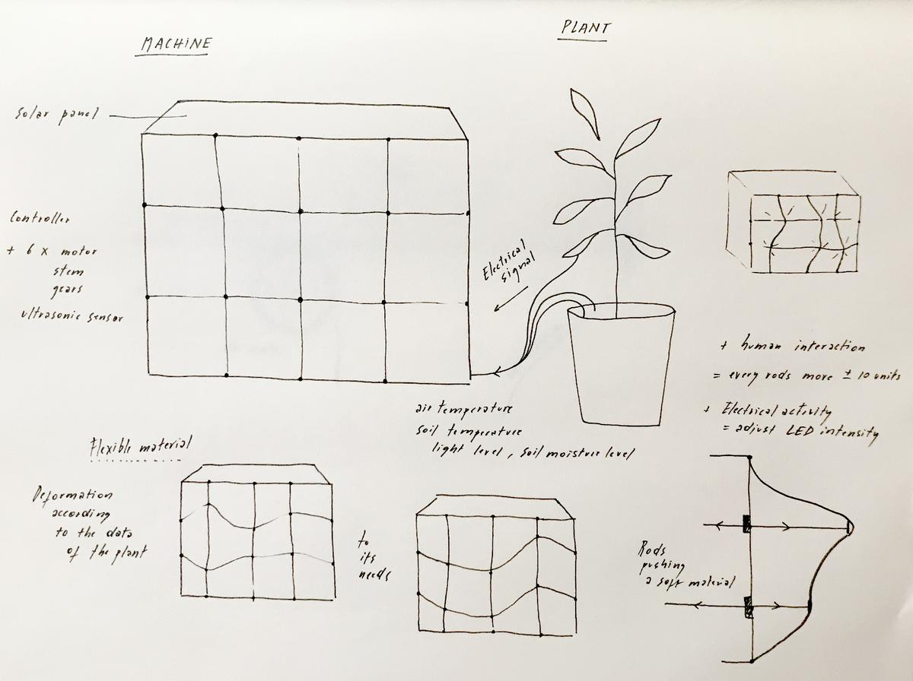
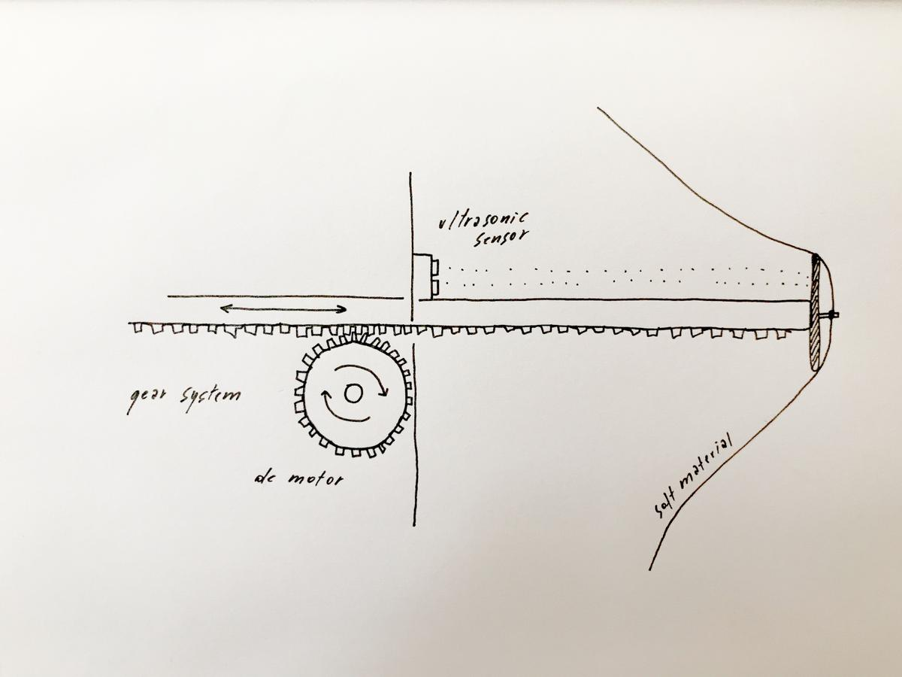

Applications and implications
For this weeks's assignement, we were asked to answer a series of questions about our final project. I don't really know where I'm going with my project but I guess that's the point of this week: write some very practical facts and see where my main idea goes, and how far I can define it. Let's do that.
How plants react to their environment
My final project is (hopefully) one of the first step towards something I would like to explore: communication between plants and how they react to their environment, to their peers, to us.
I don't know much on what's happening underground where the roots of the plants are but I'm super curious about it and I would like to invite more people to take a closer look, to take more interest in this absolutely incredible ecosystem in which we all live.
Data visualization
But before trying to understand what's going on between complex structrures such as plants, a good first step for me is to explore and familiarize myself with the data that I can collect about them and their environement, with the tools we have in fablabs and with the process of digital fabrication. Understand and visualize the needs and activity of plants. Here is my fab academy masterpiece, my final project which represents what I learned.
A physical machine
The machine I have in mind is able to get the data from a plant [electrical signal] and its environment [air temperature, soil temperature, light level, soil moisture level, human interaction] and transform it into a visual installation. Building an extra web interface to understand the process would be a plus.
Breathing movement according to the environment
I'm thinking about a machine that can represent the movement of the breath, by using mechanics instead of air, and therefore I can have the control on what's happening, ahd what kind of movement is made.

I imagine a grid of rods pushing into a soft material and therefore deforming it. Each stem is linked to a data type (temperature, moisture level, etc.) and adjust its level depending on the state of the data. The soft material takes a unique shape according to plant's needs.

Luminous choreography according to the plant's electrical signal
The electrical signal of the plant, collected using electrodes and a signal amplifier, adjust the level of the LED's to give a visual signal on the pulses of the plants.
Global reaction to a human touch
If a human touches the plant, the installation reacts as well, inviting the people to give a special attention to it. This can be made using the touche sensor, as seen here.
- What will it do?
- Who's done what beforehand?
- What will you design?
- What materials and components will be used?
- Where will come from?
- How much will they cost?
- What parts and systems will be made?
- What processes will be used?
- What questions need to be answered?
- How will it be evaluated?
Requirements
2D and 3D design
- 3D models of the installation and its details
- 2D models of the web interface
Additive and substractive fabrication processes
- Main enclosure
- Connectors between the motors and the stems
- Gear system
- Flexible material
Electronics design and production
- Light, temperature, moisture level sensors
- Touche sensors (sense the human interactions)
- Voltage sensor + amplifier
Embedded microcontroller interfacing and programming
- Main microcontroller board
- Collect, clean, organize, use data
- Build a dashboard to get a better view on what's going on
System integration and packaging
- Solar panel (off-the-grid system)
- Remote programmation of the boards (update plant's data)
- System that can host several plants in the same network